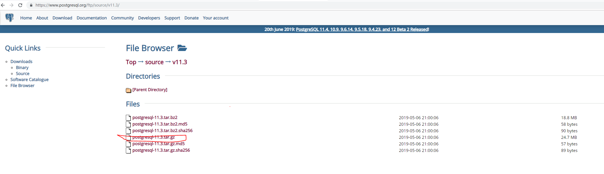
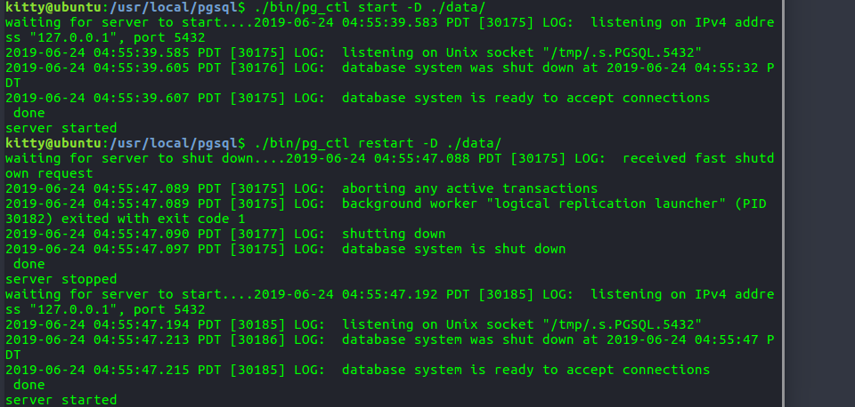
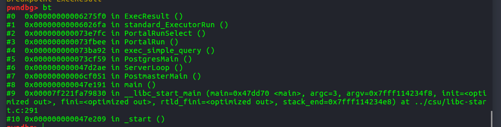

一、环境配置
Ubuntu 16.04
PostgreSql v11.3二、源码下载解压
https://www.postgresql.org/ftp/source/,选择一个版本的,这里下载v11版本系列

解压到指定目录&&新建用户（非强制只是为了方便管理
在/usr/local/下新建目录pgsql,记得chmod -R 777 pgsql否则后面打log会崩
然后将下载的压缩包丢到pgsql目录下解压
tar zxvf postgresql-11.3.tar.gz解压后大概是这么些文件
三、安装过程
配置
cd /usr/local/pgsql/
./configure --prefix=/usr/local/pgsql --without-readline坑1：error:readline library not found
解决办法apt-get install libreadline-dev
坑2：error: zlib library not found
解决办法apt-get install zlib1gapt-get install zlib1g.dev
如果没有报错了,就可以去解压包里执行make了
make如果不出意外大概需要一两分钟出现
All of PostgreSQL successfully made. Ready to install.然后执行install
make install出现
PostgreSQL installation complete.安装完毕后应该在pgsql目录下会多一些bin,include,lib等文件夹
四、配置用户环境
据我的理解是一个用户的数据库数据放在一个文件夹里储存？不知道是不是这样
先增加一个用户使用数据库
adduser postgres //添加一个名为tommy的用户
passwd postgres //修改密码
Changing password for user postgres.
New UNIX password: //在这里输入新密码
Retype new UNIX password: //再次输入新密码
passwd: all authentication tokens updated successfully.然后转换到postgres用户下，在刚刚新建的pgsql文件夹下mkdir data，如果有啥权限问题，也chmod -R 777 data/就完事了
ps:将用户添加到sudoers中操作（防止出现postgres用户不能sudo
- 首先切换到root用户
- 然后修改/etc/sudoers 权限 使其为可写
chmod u+w /etc/sudoers
vi /etc/sudoers然后在下面的
root ALL=(ALL) ALL这里增加自己需要的用户比如
root ALL=(ALL) ALL
postgres ALL=(ALL) ALL最后一定要把权限修改回来：chmod u-w /etc/sudoers
五、初始化和启动数据库
初始化
su postgres
/usr/local/pgsql/bin/initdb -D /usr/local/pgsql/data启动数据库
./bin/pg_ctl start -D ./data/ -l logfile重启和关闭
./bin/pg_ctl restart -D ./data/
./bin/pg_ctl stop -D ./data/
然后可以执行
./bin/psql进入命令行
六、创建数据库和用户
执行 ./createdb kitty 创建kitty数据库
执行 ./createuser -P postgres 创建postgres用户访问数据库后也可以用sql命令来新建用户
create user postgres with password 'xxx';七、配置远程访问
1）修改配置文件pgsql/data/postgresql.conf
vim /usr/local/pgsql/data/postgresql.conf修改监听地址：
#listen_addresses='localhost'
#将上面这行改成如下
listen_addresses='*'2）修改配置文件/pgsql/data/pg_hba.conf：
vim /usr/local/pgsql/data/pg_hba.conf添加一条IP授权记录，可以对一个网段授权
# IPv4 myhost connections:
host all all 0.0.0.0/0 trust八、使用pwngdb调试
首先查看postgres进程，有两个方法
方法1：先查看客户端未连接后端的postgres进程
ps -aux | grep postgres
然后执行
./psql -h 127.0.0.1 -d postgres再次查看进程 ,然后还是不确定
,然后还是不确定
方法2：在客户端交互界面查询后端进程ID
使用postgres=# select pg_backend_pid();
就能确定是30270了
然后pwngdb出场
8.1、设置gdb和屏蔽无用中断信号
sudo gdb attach 4208
pwndbg>handle SIGUSR1 nostop pass
Signal Stop Print Pass to program Description
SIGUSR1 No Yes Yes User defined signal 18.2、设置断点/随便设置，这里为了测试是打在计算结果处
pwndbg> b ExecResult
Breakpoint 1 at 0x6275f08.3、客户端发起查询
postgres=# select 1+1;此刻应该被断点断住的
8.4、调试
pwndbg>c
查看调用栈
